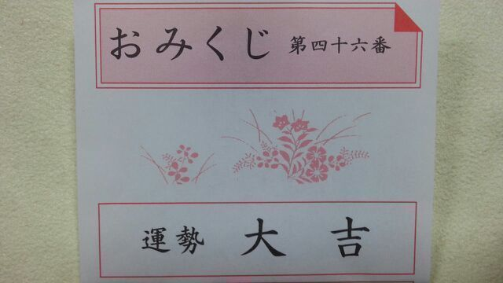

ど-も- こんにちわっ！
ミラクルパッチです☆
あっ まちご-たやん (/-＼*)笑
ろってぃ-や ！
何か 私はどんどんどんどん
ニックネームが進化していく あは.
まひろ→ろってぃー→まに
もう最近だと ミラクルパッチだよ 笑☆
そして昨日は 川後に マニティアって、、、
わ わ わ 〜〜 どんどん増えてゆくぅ〜
でも 毎日違う呼び方で呼ばれるのも
楽しいもんよ\(*´▽`*)/
ありがとう、皆 ！！
ろってぃ-に 色んなニックネームを作ってくれて！
あれだよん、あの いつもの あのキモチ。
『 嬉しゅうキモチ 』
ろってぃ- ミラクル・パッチ
あみあみ リバリー・ハンナ
ちはる レオナルド・ナナ
かずみ ズミニー・リングイネ
ひなぴょん ゴン・リサ
・・・・・・
え？ まあまあ 落ち着いてえなあ〜(;o;)
意味分かんないかもしれないけれども...
許してにゃん。
てへ (*ノ▽ノ)
今日 乃木神社に行ってきました！
今年も 乃木神社の御守りを頂きました！
やったね♪
家に 同じ御守りが 三つ=・ω・=
来年で四つ目...
いくつたまるんやろうo(^o^)oウギウギ
もちろん ろってぃ-は これがあるから
今日 おみくじしてないよ \=´▽`=/
フォーティー・シックス 大吉

これが 今年のろってぃ-ちゃんの
大事な大事な 御守りでちゅ.
最後に ビー玉みたいな瞳がチャームポイントの
みさ先輩が 21歳の お誕生日をむかえました！
みさ♪ おめでとうね♪ヽ(´▽｀)/
これからもよろちくね！！
あっ、 ではでは そろそろお家へ帰るさかい
バイバイの時間です(;o;)
皆 大好きだよ〜(*´ω｀*)
今日も ろってぃ-blogを読んでくれて
本当にありがとう！
のし Rotty.♪